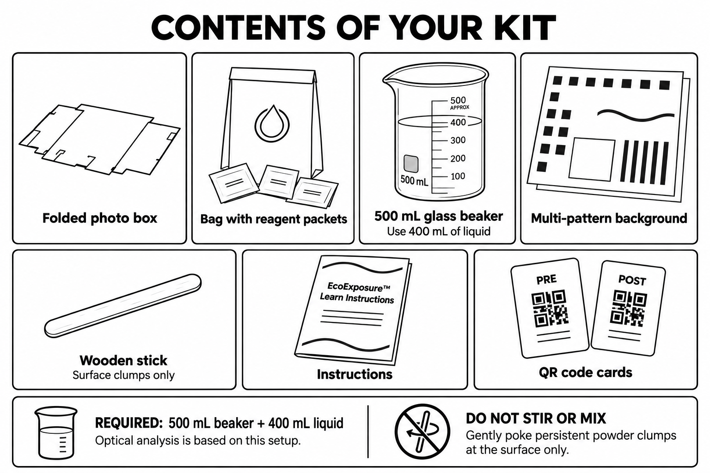
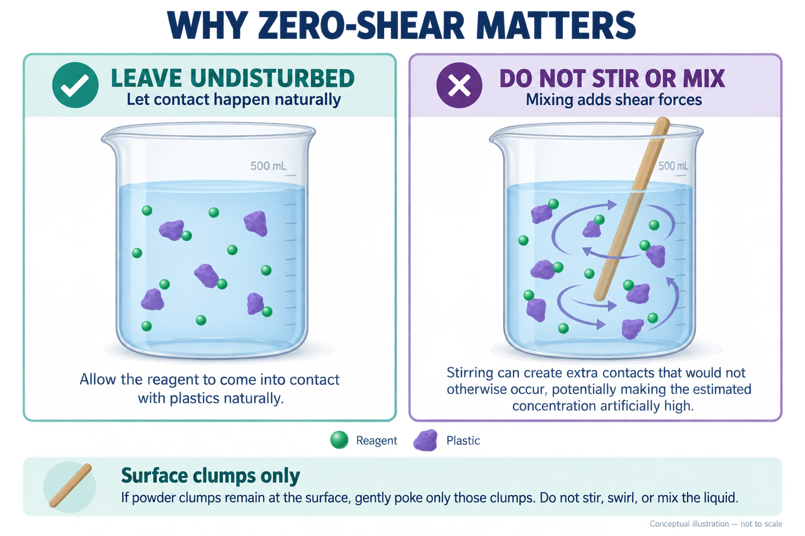
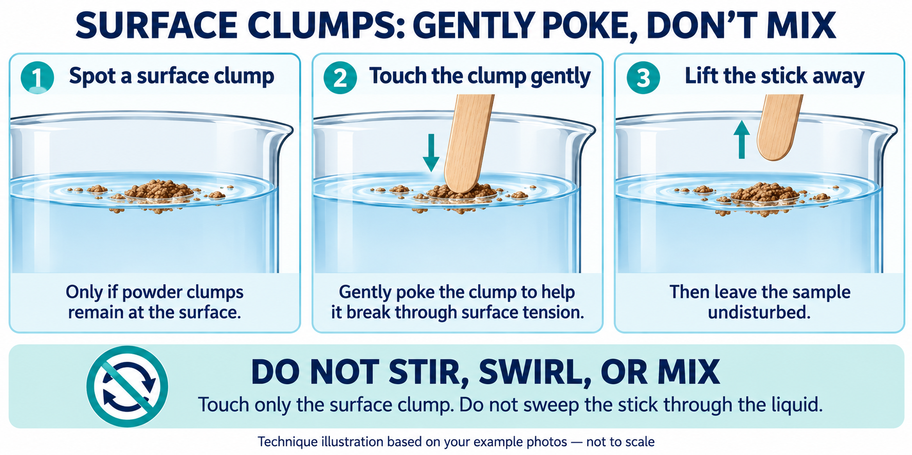
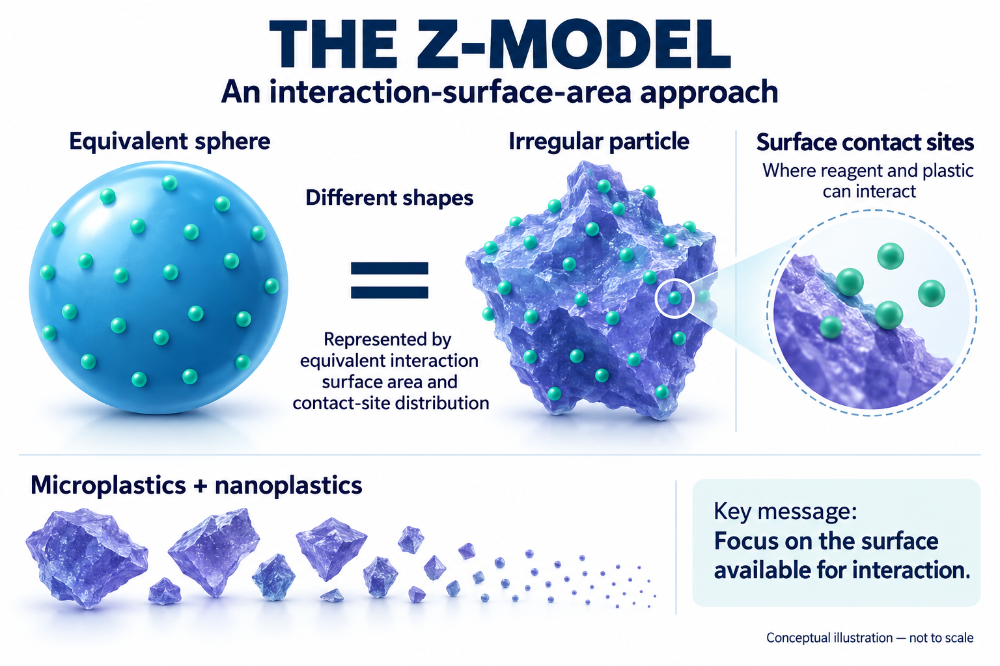
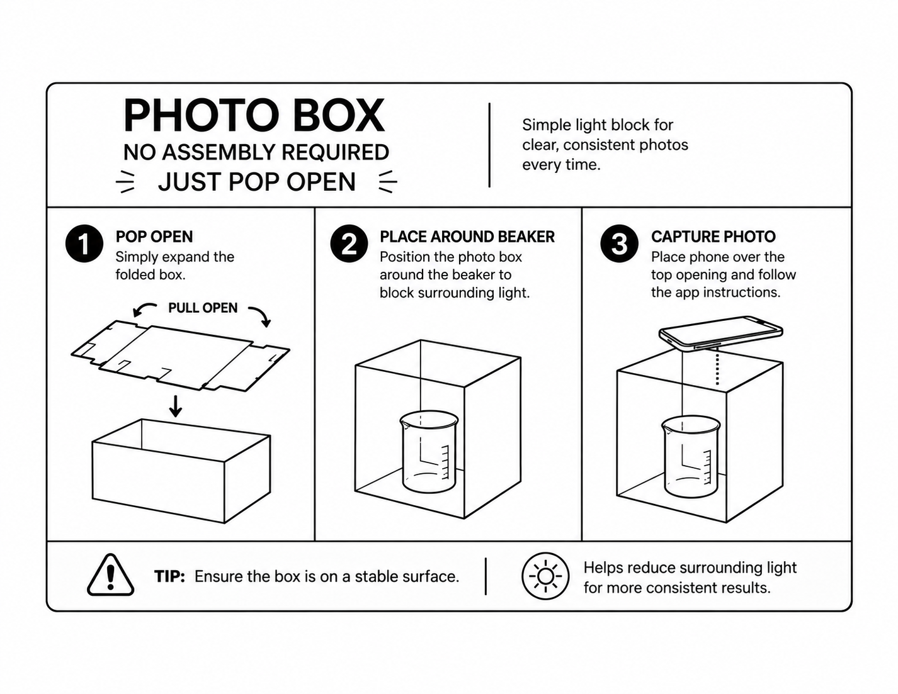

WITH A KIT
Collect a sample
Use your PRE and POST codes to record your EcoExposure sample and photos.
Run your first testA little guidance for your next sample, field observation, or photo.
Use your PRE and POST codes to record your EcoExposure sample and photos.
Run your first testAdd a field photo, notes, and optional GPS coordinates to document what you observe.
Add field dataPractice the camera and form with a little sugar or fine sand in water. Do not use EcoExposure reagent; this does not produce an assay result.
Open Practice
Have your kit instructions and PRE/POST code sheet ready. Use a 500 mL glass beaker with 400 mL of liquid; the optical analysis is based on this setup. Follow your kit instructions for the reagent amount and wait time.
Collect the water using your kit instructions. Note its source and water type. Before adding reagent, use the PRE code and Pre-Reagent stage to capture and save your baseline photos.
Add the reagent as directed by your kit instructions, then leave the sample undisturbed for the specified wait time. Do not stir, swirl, or mix.
If powder clumps are still at the surface, gently poke only the surface clumps. This is not permission to mix the sample.
After the required wait, use the POST code and Post-Reaction stage. Take the labeled views and review the previews before saving. If shadows or uneven light interfere, pop open the photo box and use it for the photos.
Use the same sample label for the matching PRE and POST observations. See the app steps.

Leave the sample undisturbed so the reagent can naturally come into contact with plastics. Stirring adds shear forces and can create extra contacts that would not otherwise occur, potentially making the estimated concentration artificially high.
Do not stir, swirl, or mix. If powder clumps remain at the surface, gently poke only those clumps.

Do not stir, swirl, or mix. Touch only the surface clump. Do not sweep the stick through the liquid.

The Z-model focuses on the surface available for interaction. It represents irregular particles using equivalent interaction surface area and contact-site distribution, where reagent and plastic can interact.
The sphere is a model representation of an irregular particle. These illustrations are conceptual and not to scale.
Keep your kit instructions nearby. This guide explains the app; use the instructions supplied with your kit for sample preparation, reagent handling, and reaction timing.
Use the PRE QR code and select Pre-Reagent in the sample form.
Use the POST QR code and select Post-Reaction in the sample form.
Each successful save uses one submission from the selected QR code. PRE and POST have separate counters; the verified-kit message shows what remains. Your printed sheet shows the starting allowance.

Use this checklist while you work. These checkboxes are reminders only; they do not verify or save anything in the app and reset when the page reloads.
Open Field to document your surroundings or something you want to record. Add a photo, a note, or both. You can include GPS coordinates, then tap Save Field Data.
A useful note describes what you observed, where it was, and any conditions that give the photo context. Record observations separately from guesses about their cause.
Field Data does not need a QR code and does not use a kit submission. Find saved entries in My Data, or open My Field Data from there.
Review My DataNo. Gently poke only the remaining surface clumps. Do not stir, swirl, or mix the liquid: zero-shear is important to the assay.
Mixing disrupts the assay. Record what happened and check with your project lead before treating that run as a valid result; do not assume waiting longer reverses it.
Pop open the photo box and use it. Check the preview and adjust the lighting or camera position until the sample is clearly visible without glare.
Scan using the button inside New Sample. Keep the full square visible, improve the lighting, and try a different distance. You can also type the manual access code printed beneath the QR. Make sure you are using the new Asia sheet in the Asia app.
Open the scanner window and read the detailed message. A code may be unrecognized or the lookup may have failed. If the issue continues, keep the exact error message so your project lead can investigate.
That code cannot accept more saves. Use another active code for the same stage, following your project lead's instructions. Switching PRE and POST is not a substitute for an available code.
No. Practice rehearses the sample workflow but does not store a scientific sample or use a kit submission. Use Sample or Field when you want to save real observations.
Use the live HTTPS app and allow camera or location access in your browser. If you previously blocked access, update the permission for this site and try again.
No. A successful save confirms the record and photos were submitted. It does not by itself provide an analysis result or determine whether water is safe to drink.